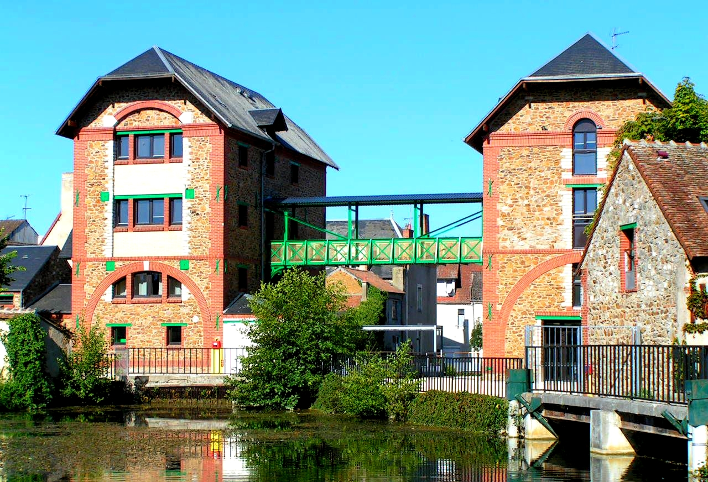

Les locaux
À Graçay, au cœur du Pays de Vierzon, dans un ancien moulin entièrement rénové, la Maison des énergies est un centre d’hébergement et d’animations scientifiques dédié à la connaissance des énergies dans une approche de développement durable. Ce centre est la propriété de la communauté de communes de Vierzon Sologne Berry et la F.O.L. 18 en a la gestion depuis son ouverture en mai 2006.
Situé au bord des marais du Fouzon, le centre est composé de deux bâtiments répartis sur trois niveaux, offrant des chambres de deux à quatre lits avec sanitaires complets. La capacité totale est de 58 lits répartis sur 22 chambres.
Le site comprend aussi deux salles de restauration, une salle polyvalente, trois salles d’activités, une infirmerie ainsi qu’une salle multimédia. Une grande cour fermée permet d’organiser des activités en extérieur. Étant situé en centre-ville, les grilles du centre sont fermées à clef la nuit pour la sécurité.
Deux yourtes sont installées au sein de la structure, permettant aux enfants de goûter au plaisir de la vie en pleine nature et de découvrir un mode d’hébergement alternatif. On trouve également deux salles de restauration, une salle polyvalente, trois salles d’activités ainsi qu’une infirmerie et une salle multimédia. Une grande cour fermée permet de pratiquer des activités en extérieur. Les Grands Moulins étant en centre-ville, les grilles du centre sont fermées à clef la nuit.
L’environement : Les alentours du centre sont riches en ressources. En effet on trouve de nombreux parcs dans le village permettant de nombreuses activités en extérieur. De plus un chemin a proximité du centre longe le Fuzon et nous plonge dans le marrais, offrant une diversité de faune et de flore appréciable.
Le matériel : Matériel sportif, vélos, ordinateurs, maquettes, babyfoot, table de ping-pong, Bibliothèque, minibus, matériel créatif, matériel de pêche...
Le centre met à disposition un grand nombre de matériels ainsi qu’un environnement axé sur l’écologie et la nature. De nombreuses activités pédagogiques en lien avec ces thématiques sont régulièrement organisées.
Plus largement, Les Grands Moulins, centre de vacances de la Ligue de l’Enseignement du Cher, est dédié à la connaissance des énergies et de la biodiversité, avec pour mission l’éducation à l’environnement et au développement durable.